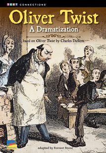

Related Resources
Text-Dependent Comprehension
- Oliver Twist: A Dramatization Text Evidence Question Card
- Courage in Hard Times Cross-Text Analysis Card
Other Titles in This Topic Set
- The Dust Bowl (Informational)
- Narrative of the Life of Frederick Douglass: An American Slave (Narrative Nonfiction)
- Analytical Arguments About Courage (Opinion/Argument)
Online Resources
- Teacher’s Guide
- E-Reader
- E-Presenter
- Comprehension Project Organizers
These interactive resources are available through a subscription to benchmarkuniverse.com.
Teacher’s Guide
Lexile® NP
Oliver Twist:
A Dramatization
ELA Strategies and Skills
Text-Dependent Comprehension Strategies
- Summarize key story elements.
- Visualize story events.
- Identify and analyze theme.
- Draw inferences.
- Draw conclusions.
- Analyze character.
Extend Language Knowledge
- Form and use verbs in the imperative mood.
Vocabulary Strategies
- Understand figurative language.
- Practice academic vocabulary.
Vocabulary List
- accomplices*
- bequeathed*
- hooligans*
- ostensibly*
- provocation*
- recuperate*
- retainer*
- scamp*
- temerity*
- upscale*
- well-appointed*
*General academic word
Writing
- Analytic writing to sources: Narrative
- Research and writing
|
What Makes This Text Complex?
|
|
Purpose and Levels of Meaning
3
|
The play dramatizes the interactions between multiple characters with complex relationships. (p. 8)★
|
|
Structure
3
|
The play is a relatively self-contained narrative but requires the readers to rely on provided information to fill in gaps in the story. (pp. 2–5)★
|
|
Language Conventionality and Clarity
4
|
Rich vocabulary, figures of speech, colloquialisms, and British dialect are used throughout the play. (pp. 4, 5, 9, 10)★
|
|
Knowledge Demands
3
|
Students may be unfamiliar with the era in which the play is set.
|
Qualitative text complexity dimensions from the CCSS are scored on the following scale: 1–Low; 2–Middle Low; 3–Middle High; 4–High.
★Citations refer to pages within this teacher’s guide that address the specific text complexity.
LEXILE® is a trademark of MetaMetrics, Inc., and is registered in the United States and abroad.
Common Core Standards © Copyright 2010. National Governors Association Center for Best Practices and Council of Chief State School Officers. All rights reserved.
© Benchmark Education Company, LLC. All rights reserved. Teachers may photocopy the reproducible pages for classroom use. No other part of the guide may be reproduced or transmitted in whole or in part in any form or by any means, electronic or mechanical, including photocopy, recording, or any information storage or retrieval system, without permission in writing from the publisher.
Drama: Play
Topic Set: Courage
in Hard Times

Scaffolded Preview for
ELs and Struggling Readers
Support students to access the text by orally introducing academic vocabulary, language structures, and concepts.
Pages 2–3. These pages give some background information about the man who wrote the story and the types of characters he creates.
Pages 4–5. These pages tell what has happened in the story so far and present a list of all the characters.
Page 7. Look at the picture. What can you tell about the man with the book? What do you think the boys are doing?
First Read
Read Part 1 (pp. 2–14) RL.6.1, RL.6.2, RL.6.3, W.6.10, SL.6.1a, SL.6.1b, SL.6.1c, SL.6.1d
Preview and Make Predictions
Invite students to flip through the book and view the illustrations. Or display the e-book and preview the pages together.
Read aloud the features of a play on the inside front cover. Invite students to read the book description on the back cover.
Ask: Think about the different types of characters a story can have. There are usually good characters, or heroes, and bad characters, or villains. What kind of character do you think Oliver Twist is? Why do you think this?
If your students need more support, use the Scaffolded Preview provided.
Set a Purpose
Say: Let’s read pages 2–5 as an introduction to the play you will read. Then, as you read the rest of Part 1 (pp. 6–14), use self-stick notes to identify the characters, settings, and main events in Act One.
Choose the reading option that best meets your students’ needs.
Summarize Main Idea and Key Details: Think and Write Together
Invite students to first summarize pages 2–4, and then summarize the main events in the rest of Part 1. As a group, create a Story Elements Chart. Then, as a group, construct a summary of the key ideas in Part 1. If students need more support to summarize the text, use the lesson on page 3 of this guide.
|
Characters
|
Setting
|
|
Oliver, Dodger, Bates, Mr. Brownlow, Fang, Mrs. Bedwin, Mr. Grimwig
|
London, England
|
|
Main Events
|
|
Oliver watches in horror as Dodger and Bates attempt to steal from an old man.
|
|
Oliver is arrested for pickpocketing and appears before a judge.
|
|
The victim, Mr. Brownlow, takes pity on Oliver, drops the charges, and takes him home.
|
|
Mr. Brownlow gives Oliver some money and asks him to return some books and pay a bill.
|
Sample Part 1 Story Elements Chart
Lesson: Determine Text Importance to Summarize
Remind students that visualizing events as they read can help them identify the important events and summarize what happened.
Say: Close your eyes and listen as I read a scene from the play. Picture in your mind what is happening.
Read aloud Scene One from Act One.
Say: What did you see happen at the bookstall? What did the boys do to Mr. Brownlow? What did Dodger do to Oliver? What happened to Oliver when the other boys ran away?
Pair students and have them write a summary of Scene One.
Summarize Main Idea and Key Details: Think/Pair/Write/Share
Bring students together and ask several pairs of students to read their summaries aloud. As a whole group, evaluate the summaries and identify the key events. Point out that students can use some of this information to help them write their summaries of Part 1. Then write a group summary of the key events in Part 1.
|
Oliver is horrified when Dodger and Bates try to pick the pockets of an old man at a bookstall. Oliver is arrested for pickpocketing and appears before a judge. The victim, Mr. Brownlow, takes pity on Oliver, decides not to press any charges, and takes him home where Oliver is nursed back to health. Mr. Brownlow entrusts Oliver with a large sum of money and some valuable books and asks him to return them to the owner of the bookstall.
|
Sample Part 1 Group Summary
Scaffolded Preview for
ELs and Struggling Readers
Support students to access the text by orally introducing academic vocabulary, language structures, and concepts.
Page 15. There are some words that might be unfamiliar to us. On page 15, the word traps is in blue. I can look at the bottom of the page to find out that in the story the word traps is a name for police officers. What other words and phrases are listed at the bottom of the page?
Page 17. Look at the top of the page. What can we use to help us identify the specific setting and the characters who appear in Scene Two?
Page 24. Look at the picture. How do you think Oliver feels? How can you tell? What do you think is happening in this scene?
Read Part 2 (pp. 15–26) RL.6.1, RL.6.2, RL.6.3, W.6.10, SL.6.1
Set a Purpose
Say: As you read Part 2 (pp. 15–26), use self-stick notes to flag important details about characters, setting, and main events as well as stage directions and illustrations that help you identify important information. Think about Fagin’s problem and his solution in this section.
Choose the reading option that best meets the needs of your students. If students need more support to access the text, use the Scaffolded Preview provided.
Summarize Main Idea and Key Details: Think/Pair/Write/Share
Invite students to share with a partner what they noted in the text. Have them collaborate to create a new Story Elements Chart for Part 2 that lists the characters, setting, and key events.
|
Characters
|
Setting
|
|
Oliver, Fagin, Dodger, Sikes, Nancy, Monks, Rose
|
Fagin’s hideout, London bookstall, Rose’s house
|
|
Main Events
|
|
Fagin and Sikes discuss their fear that Oliver will tell the police about them.
|
|
Nancy kidnaps Oliver outside the bookstall and takes him back to Fagin’s hideout.
|
|
Monks tells Fagin to get Oliver arrested or kill him so Oliver cannot inherit any family money.
|
|
Oliver is caught when Sikes forces him to break into Rose’s house.
|
Sample Part 2 Story Elements Chart
Then have pairs collaborate to write their own summary of the key ideas in Part 2. If students need more support in deciding what to include in a summary, refer back to the lesson strategy taught in Part 1.
Bring students together and ask several pairs of students to read their summaries aloud. As a group, evaluate the summaries and identify any key information that was omitted. As a group, construct a written summary of the key ideas in Act Two.
|
Fagin and Sikes discuss the possibility that Oliver will tell the police about them. Nancy kidnaps Oliver outside the bookstall and returns him to Fagin’s hideout. Monks wants Fagin to get Oliver arrested or kill him so he cannot inherit any family money. Oliver is caught breaking into Rose’s house with Sikes.
|
Sample Part 2 Group Summary
Read Part 3 (pp. 27–30) RL.6.1, RL.6.2, RL.6.3, W.6.10, SL.6.1
Set a Purpose
Say: As you read Part 3 (pp. 27–30), continue to use self-stick notes to flag important information about characters, setting, and main events in the text and illustrations for Act Three.
Choose the reading option that best meets the needs of your students. If students need more support to access the text, use the Scaffolded Preview provided.
Summarize Main Idea and Key Details: Think and Write Independently
Ask students to review the main events they flagged in Part 3. Have them independently create a chart like the ones completed for Parts 1 and 2. Then have them write their own summary of the key information in Part 3.
|
Characters
|
Setting
|
|
Oliver, Rose, Giles, Nancy, Mr. Brownlow, Monks
|
Rose’s house, Mr. Brownlow’s house
|
|
Main Events
|
|
Nancy pleads with Rose to take Oliver to Mr. Brownlow so he will be safe.
|
|
Mr. Brownlow reveals that Oliver is Monks’s half-brother.
|
|
Mr. Brownlow orders Monks to leave Britain and give half of his inheritance to Oliver.
|
|
Oliver lives happily ever after with Mr. Brownlow.
|
Sample Part 3 Story Elements Chart
Bring students together and ask volunteers to read their summaries aloud. As a whole group, evaluate the summaries.
|
Nancy tells Rose about Oliver’s connection to Mr. Brownlow and pleads with her to take the boy back to him. Mr. Brownlow reveals that Oliver and Monks are half-brothers. Mr. Brownlow threatens Monks and orders him to leave Britain and give half of his inheritance to Oliver. Oliver and Mr. Brownlow live together happily ever after.
|
Sample Part 3 Summary
Scaffolded Preview for
ELs and Struggling Readers
Support students to access the text by orally introducing academic vocabulary, language structures, and concepts.
Page 27. Where does Scene One of Act Three take place? How can you tell that Rose feels nervous?
Page 28. What word might be unfamiliar to us on page 28? What is the meaning of blokes?
Page 29. On this page, Mr. Brownlow talks about Oliver’s inheritance. An inheritance is money or property you receive when someone in your family dies.
Page 30. The play ends with a note. It tells what happens in the rest of the story. We will read the note after we finish Act Three.
Close Reading Options
Support students to dig deeper into the text. Choose one or more of these close reading options, or choose an alternate focus that addresses your students’ needs.
Routine for Finding
Text Evidence
- Read the question carefully.
- Ask yourself: What words in the question help me know what evidence to look for?
- Reread the text to find the
evidence.
- Evaluate the evidence. Ask yourself: Does the evidence I found help me answer the question? Do I need more evidence?
- Use the evidence to answer the question.
- Ask yourself: Does my evidence support my answer?
|
Text Evidence
|
|
“I’ve decided that I’m not pressing any charges. This boy is very ill.” (p. 10)
|
|
“Yes, he should recuperate nicely under our watch. The poor lad!”
(p. 11)
|
|
“It’s too late for me. Help the boy. If you and Mr. Brownlow can do that, then I will have done one good thing with my life.” (p. 28)
|
|
“. . . you must leave half your family inheritance for the boy.” (p. 29)
|
|
“You saved my life, Mr. Brownlow.”
(p. 30)
|
|

|
|
Theme
|
|
Showing kindness to others can have an important and positive effect on their lives.
|
Sample Theme Graphic Organizer
Close Reading and Analysis
Close Reading Option 1: Identify and Analyze Theme
RL.6.1, RL.6.2, RL.6.3, W.6.10, SL.6.1
Model Finding Text Evidence
Display and read aloud the close reading question.
|
What is a central theme of this play and how is it conveyed through particular details?
|
Remind students that the theme of a story is a central message. Explain that this question asks readers to identify a theme in the play and then locate text evidence that illustrates it.
Say: Finding the theme of a story requires readers to make an inference based on text evidence. We need to look at the characters’ actions and how they affect the plot of
the story.
Reread pages 10–11.
Say: In the courtroom scene, I notice that Mr. Brownlow shows kindness towards Oliver. When the judge sentences Oliver to three months of hard labor, Mr. Brownlow says, “I’ve decided that I’m not pressing any charges. This boy is very ill.” Mr. Brownlow takes Oliver home and takes care of him. This act of kindness dramatically changes the course of Oliver’s life in a positive way. Instead of going to prison, he has a home where he is cared for. I think a central theme of the play is the importance of showing kindness to others.
Display a blank Text Evidence Chart and model how you record the text evidence you found.
Support Practice
Ask students to turn to page 27.
Collaborative conversation (turn and talk). Ask students to turn to a partner, reread pages 27–28, and find additional text evidence that supports the theme of the importance of showing kindness. Remind students to stay on topic, build on each other’s ideas, and ask questions to clarify each other’s thoughts.
Bring students together and ask several pairs to share the text evidence they found. Students should be able to explain that Nancy shows kindness by trying to help
Oliver and telling Rose the truth about him. Her actions will result in Oliver returning to Mr. Brownlow’s home rather than being handed over to the police. This shows how kindness can have an important and positive effect on someone’s life.
Find Text Evidence Independently
Ask students to reread pages 29–30 independently to identify more evidence that supports the theme. Students should conclude that Mr. Brownlow shows kindness to Oliver by demanding that Monks share the family inheritance and by giving Oliver a new life and a new home.
Discuss how this close reading has helped students understand that the text evidence supports the theme that showing kindness can have a positive effect on someone’s life.
Close Reading Option 2: Draw Inferences RL.6.1, RL.6.3, RL.6.5, W.6.10, SL.6.1
Model Finding Text Evidence
Display and read aloud the close reading question.
|
How is Act Two, Scene Four (page 22) a turning point in the play?
|
Explain that a turning point is an event in the story that can change the main character’s life–and the direction of the plot—in a significant way. Explain that this question asks readers to find text evidence that helps them draw an inference about what makes Act Two, Scene Four a turning point in the story.
Say: First, I will need to look at what happens to Oliver and what happens in the plot up until this point in the story. Then I will need to find text evidence that helps me understand what event in Act Two, Scene Four could significantly change Oliver’s life.
Review with students the key events in Act One.
Say: In Act One, Oliver’s life has some ups and downs. In Scenes One and Two, he is arrested as a pickpocket and faces three months of hard labor. In Scene Three, we see that Oliver’s life has greatly improved. He has a home and he is being taken care of. Mr. Brownlow says that Oliver will “recuperate nicely.” In Scene Four, it says that Oliver is “looking well in a new suit of clothes.” This text evidence tells me that his life is moving ahead in a healthy and positive direction.
Record the evidence on a blank Text Evidence Chart.
Support Practice
Ask students to turn to page 15.
Collaborative conversation (turn and talk). Ask students to turn to a partner. Ask them to reread the first three scenes of Act Two, and to find text evidence that helps them draw inferences about Oliver’s life. Remind students to stay on topic, build on each other’s ideas, and ask questions to clarify each other’s thoughts.
Bring students together and invite pairs to share the text evidence they found. Students should be able to explain that Oliver’s life has taken a downward turn again because he is back in the control of the criminals Fagin and Sikes. Students should also note that Oliver is in danger of being killed or arrested again because Monks does not want him to be able to claim any of his family’s money.
Find Text Evidence Independently
Ask students to reread Act Three, Scene Four independently. Tell them to look for text evidence that helps them draw an inference about what makes this scene the turning point in the play. Students should be able to explain that Oliver’s life could change significantly in a bad way because both Sikes and Crackit threaten to shoot and kill him, and Oliver refuses to break into the house and rob it.
Discuss how this close reading has helped students draw an inference that Act Two, Scene Four is a turning point in the play because it involves an event that could change Oliver’s life and the story’s plot in a significant and negative way.
|
Text Evidence
|
|
“(A POLICE OFFICER catches OLIVER before he exits.)” (p. 8)
|
|
“Three months! Hard labor, of course.” (p. 10)
|
|
“Yes, he should recuperate nicely under our watch.” (p. 11)
|
|
“(. . . OLIVER, looking well in a new suit of clothes).” (p. 13)
|
|
“We will have one, if you can land the boy in jail. Or get him snuffed.” (p. 21)
|
|
“And if he’s in jail, even if he does find out who he really is, he can’t claim any of the family money.” (p. 21)
|
|
“(SIKES pulls out a pistol.)” (p. 22)
|
|
“If you keep moving your mouth like that, though, there’ll come a time when a quick-enough loud noise will be safer than your miserable racket.” (p. 23)
|
|
|
|
Inference
|
|
Act Two, Scene Four is the turning point in the play because it involves an event that could negatively change Oliver’s life by leading to his death or his arrest.
|
Sample Inference Graphic Organizer
|
Text Evidence
|
|
“What I find remarkable is how much the boy looks like the painting of my old friend Edwin Leeford, bequeathed to me before he died.” (p. 11)
|
|
“And if he’s in jail, even if he does find out who he really is, he can’t claim any of the family money.”
(p. 21)
|
|
“So we finally meet. Edward Leeford, the rotten son of a good man, Edwin Leeford.” (p. 28)
|
|
“It’s for the boy, your half-brother, Oliver.” (p. 29)
|
|
“The eyes . . . the coloring—the boy looked too much like Edwin’s old painting for it to be a coincidence. So I hired an investigator and learned the truth.” (p. 29)
|
|
|
|
Conclusion
|
|
Oliver and Monks are half-brothers because they have the same father, Edwin Leeford.
|
Sample Conclusion Graphic Organizer
Close Reading Option 3: Draw Conclusions
RL.6.1, RL.6.3, W.6.10, SL.6.1
Model Finding Text Evidence
Display and read aloud the close reading question.
|
What is Oliver’s relationship to Monks?
|
Explain that this question asks readers to find text evidence that helps them draw a conclusion about how Oliver is related to Monks.
Say: I will need to look for text evidence that will help me draw a conclusion about how Oliver and Monks are connected as members of the same family.
Reread page 11.
Say: On page 11, Mr. Brownlow looks at a picture and says, “What I find remarkable is how much the boy looks like the painting of my old friend Edwin Leeford, bequeathed to me before he died.” I know that Oliver is an orphan and does not know anything about his family. This text evidence does not tell me about Monks, but it seems like it could be a evidence about the boy’s background and family. I will look for other text evidence about Oliver’s family and this man named Edwin Leeford.
Record the evidence on a blank Text Evidence Chart.
Support Practice
Ask students to turn to page 21.
Collaborative conversation (turn and talk). Ask students to turn to a partner, reread page 21, and find text evidence that helps them draw a conclusion about the connection between Oliver and Monks. Remind students to stay on topic, build on each other’s ideas, and ask questions to clarify each other’s thoughts.
Bring students together and ask several pairs to share the text evidence they found and to explain how their evidence supports their conclusion. Students should be able to explain that Monks wants Oliver arrested or killed so he cannot “claim any of the family money.” This evidence is important because it shows that Monks is aware that Oliver is related to him in some way. Students may conclude that Monks and Oliver share a parent because they are both due to inherit family money, and that happens when a parent dies.
Find Text Evidence Independently
Ask students to reread pages 28–29 independently. Tell them to find text evidence that helps them draw a conclusion about Oliver’s relationship to Monks. Students should explain that Mr. Brownlow refers to Monks as the son of Edwin Leeford, the person in the painting whom Oliver resembles, and then identifies Oliver as Monks’ half-brother. This is important because it shows that Oliver and Monks have the same father, Edwin Leeford.
Discuss how this close reading has helped students use text evidence to draw a conclusion about a key relationship between two characters in the play.
Close Reading Option 4: Analyze Character
RL.6.1, RL.6.2, RL.6.3, W.6.10, SL.6.1
Model Finding Text Evidence
Ask students to turn to the Comprehension chart on page 32. Explain that the chart serves to help students analyze a character in the play.
Say: First, let’s list Mr. Brownlow as the character at the top of the chart. Throughout the play, one characteristic that I noticed about Mr. Brownlow was how kind he was. I will write “kind” in the first row under the heading “Characteristics.”
Distribute the graphic organizer BLM on the back cover of this guide. Then support students to turn to page 10.
Say: Now I need to find text evidence that shows Mr. Brownlow is a kind man. On page 10, Mr. Brownlow tells the judge, “I’ve decided that I’m not pressing any charges.” Instead of having Oliver arrested and sentenced to three months of hard labor, Mr. Brownlow decides to take Oliver home and care for him. This text evidence tells me that Mr. Brownlow is a kind person.
Write “drops charges and takes Oliver home” in the first row of the chart. Have students reread page 11 to find additional text evidence of Mr. Brownlow’s kind nature: “Yes, he should recuperate nicely under our watch.” Explain that Mr. Brownlow is showing kindness by giving Oliver a home and helping him become healthy. Add this evidence to the chart.
Support Practice
Collaborative conversation (turn and talk). As a group, identify a second characteristic of Mr. Brownlow, such as compassionate, and write it in the second row of the chart. Then ask students to turn to a partner and find text evidence of Mr. Brownlow’s compassion. Remind students to stay on topic, build on each other’s ideas, and ask questions to clarify each other’s thoughts.
Bring students together and ask several pairs to share the text evidence they found to show that Mr. Brownlow is compassionate. Students should explain that Mr. Brownlow saves Oliver from prison, gives him a home, and helps him claim his inheritance. Students should also explain that these acts are evidence of Mr. Brownlow’s compassion because they show his willingness to help someone who has no friends, family, or resources.
Find Text Evidence Independently
Direct students to complete the last row of the chart independently. Tell them they should list a third characteristic and then find text evidence that supports it. Students may note that Mr. Brownlow is a fair man because he orders Monks to leave the country but allows him to keep half of his family inheritance.
Discuss how this close reading has helped students analyze a main character by identifying his key characteristics and then using text evidence to illustrate those characteristics.
Close Reading Option 5: Answering Text Evidence Questions RL.6.1, RL.6.2, RL.6.4
Use these questions to extend close reading or challenge students who do not need modeling or differentiated practice.
Draw Inferences
Question: Why doesn’t anyone step in to help Oliver when Nancy kidnaps him off the street?
Answer: Nancy pretends that she is Oliver’s governess. She makes it seem as if he stole the books and ran away from home. The people on the street think she is taking him home.
Text Evidence: “Oliver! You naughty boy! Running away from home like. . . . You rascal! Cooperate!” (p. 17)
Determine Key Details
Question: What task does Mr. Brownlow give Oliver?
Answer: He asks Oliver to return some books to the bookstall and give the owner a large sum of money. (p. 13)
Use Context Clues
Question: Reread the stage directions at the top of page 18. What does the term scuffle mean? What evidence on pages 17 and 18 help the reader define the word?
Definition: a fight or struggle between people
Text Evidence: “She creeps behind him, then captures him in the sheet.” (p. 17)
“. . . OLIVER manages to peek his head out of the sheet, though NANCY does have a good hold on him.” (p. 18)
Extend Meaning
Cross-Text Analysis Card
Build Language, Vocabulary, and Comprehension
RL.6.9, RI.6.9, L.6.1c, L.6.5a
Recognize and Correct Inappropriate Pronoun Usage
Remind students that pronouns must agree in number and person with the nouns they refer back to.
Display the following sentences and identify the pronouns:
I believe you, Nancy. Let us give them some money.
Explain that in the second sentence, us is not correct because it does not agree with I in the first sentence and them is not correct because it does not agree with Nancy in the first sentence. Model how to correct these errors.
Continue this lesson by having students identify and correct the pronouns that are used inappropriately in these sentences:
The pickpockets stood behind Mr. Brownlow. I tried to take his watch without them noticing.
Vocabulary Strategies: Analyze Figurative Language
Have students turn to the vocabulary activity on the inside back cover.
Say: Sometimes authors use language in a way that is different from the common meaning. We can use context clues in the surrounding text to help us determine the meaning of figurative language.
Have students locate the first example on page 21.
Say: Here Monks is referring to Oliver and saying “he can’t squeal without going to jail himself.” He says that Oliver could be “guilty of a crime” and go to jail. In this example, Monks seems to be worried about Oliver saying something that could get him in trouble. I think when Monks says Oliver can’t squeal he means that Oliver can’t tell the police about the criminal activity he has seen.
Ask students to complete the rest of the chart independently, and to provide their answers in writing.
Comprehension Across Texts
If students have read all four texts in the topic set, use the questions on the Cross-Text Analysis Card for additional close readings that require students to find and analyze evidence in more than one text.
Reading, Writing, Speaking and Listening RL.6.4, RL.6.9, RI.6.9, W.6.3a, W.6.3b, W.6.3c, W.6.3d, W.6.3e, W.6.7, W.6.8, W.6.9, W.6.10, SL.6.6, L.6.6
Practice Finding Text Evidence
Have students reread the text to find evidence to answer the questions on the Text Evidence Question Card.
Write to Sources: Narrative
Have students demonstrate their understanding of Oliver Twist: A Dramatization by responding to the text-dependent writing prompt on the inside back cover. Rubrics to help you evaluate students’ writing are available in the online teacher’s guide.
Narrative. Rewrite an act from the play as a narrative from Oliver’s point of view. Use precise words and sensory details in your retelling. Remember to use details from the play in your narrative.
Practice Academic Vocabulary
Ask partners to each choose three words from the glossary and compose a short paragraph that includes all three words. Have pairs read aloud their paragraphs.
Point out that many words can have positive or negative connotations. Have students use digital or print resources to find synonyms for the glossary words hooligans and scamp that have more positive connotations. Have them write sentence pairs that include the glossary word in the first sentence and its synonym in the second sentence. Remind them that the words they use in each sentence should work together to convey either a positive or a negative feeling.
Collaborative Research
Have partners conduct collaborative research on the topic of Charles Dickens. Have them use print and digital resources to explore his most famous novels and what he was best known for as an author. Have them take notes on their findings and then write and publish their reports. As an additional challenge, have students present their reports to the class.
Independent Learning
Text Evidence Question Card
Interactive Activities
Visit benchmarkuniverse.com for additional interactive learning activities.
Comprehension: Analyze Character
Directions: Choose one character from the play and list three words that describe him or her. Then list examples of things the character says and does that show evidence of each characteristic.
|
Character:
|
|
Characteristics
|
Text Evidence
|
|
|
|
|
|
|